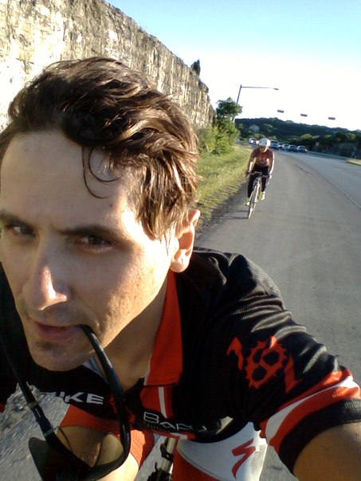
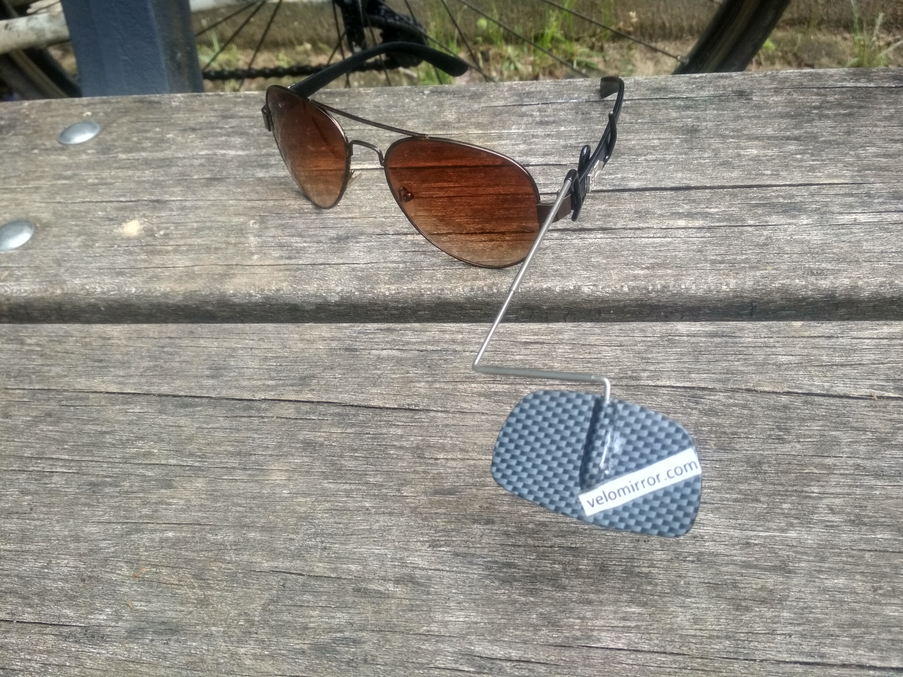

Андрей Яценко - велосипедный косультант
Велосипедные поездки по Европейским горам по спокойным, тихим улицам
Для новичков с целью повышение здаровье
С акцентом на развлечение и безопасность
Сайт называеться Вело Миррор - зеркало позволяет велосипедисту быть полноценным участником дорожного движение, а не испуганной жертвой (см. ниже)
Велосипедный спорт - единственный спорт которым можно заниматьчя по 5, 10 часов в день
Я всё организую для поездки, вы только педали крутите и наслаждайтесь
Я владею русским и ангийским языками на родном уровне
